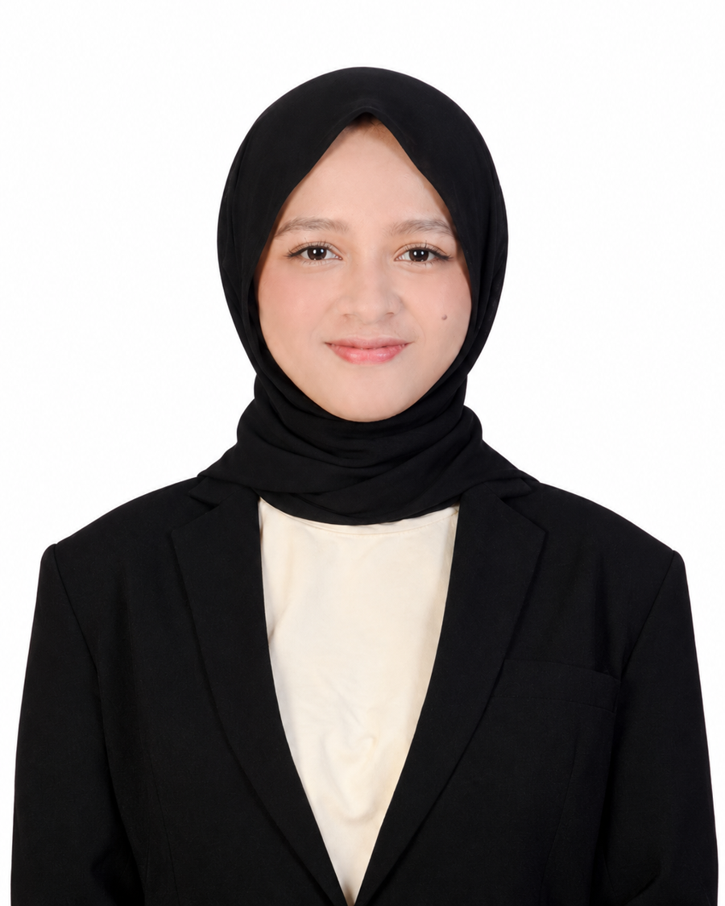

The person behind the pixels
Hi, I'm Shalvia Fazila Saraswati.
Saya mahasiswa Sistem Informasi yang sedang menapaki dunia teknologi dan konten kreatif. Saya menikmati proses mengubah ide menjadi visual yang enak dilihat, mulai dari foto, video, sampai desain antarmuka.
Di luar kelas, saya senang mengeksplorasi ide kreatif dan merapikan detail sampai terasa pas. Halaman ini adalah ruang yang terus saya perbarui seiring bertumbuh.
StatusMahasiswa aktif
Program studiSistem Informasi
UniversitasUniversitas Budi Luhur
Emailshalviafs@icloud.com